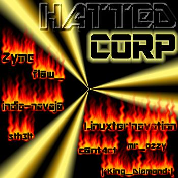

O Progresso
Você deve pensar que o progresso é uma coisa legal né, pois ele lhe oferece
uma vida de conforto e diversão, lhe oferece computadores, carros modernos,
produtos que a fazem cada vez mais parte do seu cotidiano. Mas na verdade o
progresso causa poluição, desequilíbrio ecológico, destruição do meio
ambiente e tudo mais de ruim para o planeta.
O simples ato
de vc comprar um lápis pode estar contribuindo para o desmatamento ou desequilíbrio
ecológico, ou vc acha que o aviso no lápis "madeira reflorestada"
adianta alguma coisa, se as árvores da florestas forem cortadas perde toda sua
fauna e causa desequilíbrios ecológicos irreversíveis causando morte de várias
espécimes e contribuindo para um ar menos respirável.
O carro
que te leva de um lugar para o outro joga na atmosfera uma quantidade muito
baixa de gases poluentes, mas imagine 100.000.000 de carros de todos os tipos
jogando gases na atmosfera sem parar durante décadas, sem falar nas fabricas
que poluem os rios para vc ter essa sua caneta no seu bolso e os esgotos que
desembocam nos mares e rios matando milhares de peixes e outras espécies e
contribuindo para propagação de doenças e matando pessoas.
O progresso também causa a desunião de pessoas que para
ter tudo isso só pensam em ganhar dinheiro. "É,
mais! Eu tenho tudo isso e nunca me atrapalhou, vc acha que eu vou largar toda
essa minha vida boa para preservar algo que não me interessa".
Se você pensa assim seu porco capitalista filha da puta, vamos ver se daqui a
20 anos vc não morre asfixiado com a fumaça do seu "BMW p100 super
poluidor 1.0" ou com a água mineral natural direto do rio tietê. vamos
ver seu filho ver arvores apenas na TV, brincar com brinquedos tóxicos porque
acabou o petróleo do mundo e não se pode fazer mas plástico, ver seu cérebro
fritar de tanto ver TV e ficar o dia inteiro se deliciando com as bugigangas
eletrônicas da vida moderna. desperdiçar comida enquanto tem gente que na
favela morre de fome se não morreu antes no desmoronamento que ocorreu por
causa do lixo nas encostas que gente ignorante como você e outros babacas
desconsientizados jogam porque ficou com preguiça de ir do outro lado da
rua jogar o lixo na lata.
Eu quero levar meus filhos pra passear num parque com bastante arvores sem
carros por perto ou poder nadar num rio sem correr o perigo de pegar uma doença
ou ser cortado por alguma latinha de coca-cola, poder beber suco de laranja imvês
do lixo industrializado que produzem nas mesmas industrias que poluem rios e
jogam gases nocivos no ar.
Eu te quero dizer manê que eu deixaria todas essas palhaçadas
da vida moderna para viver num mundo livre, unido e limpo sem diferenças
sociais e sem dinheiro que é o motivo de toda essas porcarias.
Eu queria dizer, que eu não sou contra o progresso mais sim contra ao progresso
pela exploração das pessoas e da natureza e para fins comerciais. O progresso
deve existir, mais apenas para ajudar e melhorar as condições de vida das
pessoas e não para saciar a ambição de alguns.
"Não existe progresso com fome e
repressão"